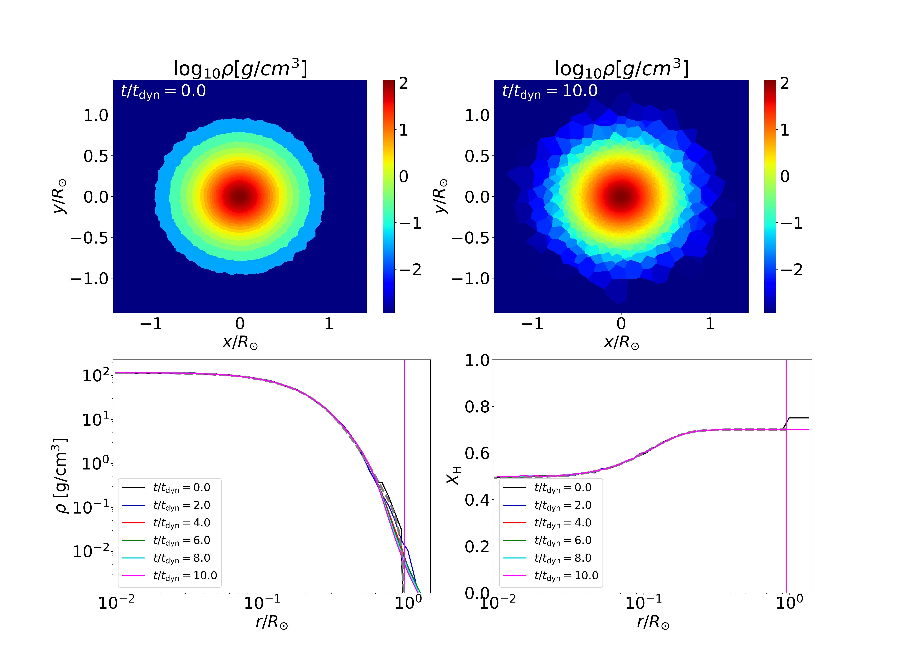

Session 6. Practice 1 - relaxation of main-sequence star
1. Overview
A python script for making a single main-sequence star can be found in run/Star_relaxation/Creating_IC. In the directory, you can find the following files,
$ MESAmodel helm_table.dat ic_MS.py module.py param_config_sample snapshot_single.py species55.txt
MESAmodelcontains MESA models that will be mapped into a 3D domain. You can see two stellar models, one for a 0.3Msol star (MESA_0.3Msol_Z0.020_H0.69.data) and one for a 1Msol star (MESA_1Msol_Z0.02_H0.5.data). The files contain a table with each column having a key quantity necessary for mapping (e.g., density, internal energy, radius and so on). The file can be in any format as long as those quantities are properly read inic_MS.py.helm_table.datandspecies55.txtare files for the Helmholtz EOS which will be used for relaxing the star.ic_MS.pyis a python script which creates the initial condition files and puts them in a stage directory.module.pycontains several python functions that are used to make the initial condition files and creating plots.param_config_sampleconstains sampleparam.txtandConfig.shwhich will be copied to the stage directory.snapshot_single.pyis a python script in which output data are read to make a plot.
2. Creating 3D star
Because ic_MS.py is written to make initial condition files and put all the necessary files in a new directory authomatically, creating a 3D star is really easy. What you need to do is,
$ python3 ic_MS.py
then you can see the following (or similar) messages on display,
$ python3 ic_MS.py
$ [Stellar info]
$ MESAmodel MESAmodel/MESA_1Msol_Z0.02_H0.5.data
$ Mass : 1.000 Msol
$ Radius: 0.952 Rsol
$ Core H fraction: 4.921e-01
$ Core He fraction: 4.873e-01
$ Total mass: 0.999703 solar masses
$ Using 25000 particles of mass 7.95364e+28 (3.99881e-05 solar masses)
$ volcell=5.42806e+29, volboxcell=7.0982e+31
$ volcell=5.42806e+30, volboxcell=7.0982e+31, np=192
$ volcell=5.42806e+31, volboxcell=7.0982e+31, np=108
$ Added 3980 box cells.
$ Created 29288 particles.
$ Writing gadget file: IC.hdf5
$ Done.
$ TimeMax: 14799.19175664247
$ TimeBetSnapshot: 1479.9191756642472
$ BoxSize: 662474960051.9448
$ MESA model path: MESAmodel/MESA_1Msol_Z0.02_H0.5.data
$ move files to ../MS_relaxation_1.0msun
This means all the initial condition files have been moved to ../MS_relaxation_1.0msun so you just need to go to that directory and run a simulation. However, what is really important is to know what is written in ic_MS.py and understand how it works so that you can creat your own script or modify the script specific for your own project.
Now let’s see how the initial condition files are made in ic_MS.py.
3. Compiling
As we did before, we first load the environment modules
$ source /usr/common/appl/modules-tcl/init/sh
$ module purge
$ module load mpich/3.3.6
$ module load fftw-mpich/3.3.6
$ module load gsl
$ module load hdf5/1.8.18
and go to the top level of the AREPO directory (<path_to_AREPO>/AREPO/) and compile using the following line,
$ make CONFIG=./run/Star_relaxation/MS_relaxation_1.0msun/Config.sh BUILD_DIR=./run/Star_relaxation/MS_relaxation_1.0msun/build EXEC=./run/Star_relaxation/MS_relaxation_1.0msun/Arepo
4. Running
We go to the stage directory (<path_to_AREPO>/AREPO/run/Star_relaxation/MS_relaxation_1.0msun/) and run using the following command,
$ mpirun -n 10 ./Arepo param.txt
5. Analyzing
To execute the python script, use the command line,
$ python3 snapshot_single.py
then, you will get the following image,
{kind=link}